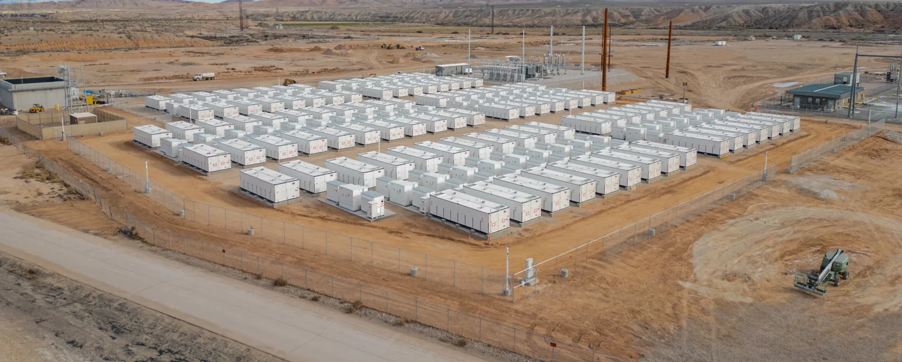

Tesla
Senior Product Engineer · Megapack
Utility-scale battery energy storage, product engineering, and technical work supporting large battery deployments.
Current
Engineering · Research · Energy
Building practical technology from materials to energy systems.
Engineering at the intersection of electrochemistry, advanced materials, manufacturing, and resilient energy.
01 / About
University of Michigan chemical engineering graduate and seasoned Senior Product Engineer at Tesla, focused on Megapack energy storage. Product engineering experience with battery systems built for dependable, large-scale energy storage.
Interdisciplinary work across batteries, microfluidics, polymers, and additive manufacturing connects scientific detail with hardware and systems engineering. Drawn to problems that cross traditional boundaries.
02 / Experience
A path from award-winning chemistry and microbial research through university and applied materials development into energy products operating at scale.
Let’s Chat ↘Senior Product Engineer · Megapack
Utility-scale battery energy storage, product engineering, and technical work supporting large battery deployments.
Materials & manufacturing research
Developed space manufacturing methods for DARPA NOM4D, multi-metal powder bed fusion processes, and high-entropy alloys.
Materials Development Engineer · Research
Developed multi-jet printing resins, studied material degradation, and adapted printing for calcium-composite bone scaffolds.
B.S. Chemical Engineering · Research
Redox flow battery electrolytes and experimental systems; additive manufacturing of 3D-printed microfluidic devices.
Award-winning researcher · chemistry & microbial systems
Developed antimicrobial acrylate polymers and microbial fuel cells for arsenic filtration and heavy-metal removal, earning international ISEF awards.
03 / Selected work
A selection of research and engineering work, from early experiments in environmental biotechnology to in-orbit manufacturing and grid-scale batteries.
Let’s Chat ↘
Senior Product Engineer and Subject Matter Expert across Megapack fleet management, technical operations, and utility-scale energy storage systems.
See a Tesla Megapack deployment ↗
Developed methods to form and join structures for in-orbit construction through HRL’s DARPA NOM4D program.
Read HRL’s NOM4D article ↗See DARPA’s update · art by Colie Wertz ↗
Developed multi-metal powder bed fusion processes and novel alloy systems, including work patented with Boeing.
Explore HRL materials research ↗Developed additive manufacturing methods for 3D-printed microfluidic channels and research devices.
Explore the Burns Lab ↗
Developed anti-weathering resin formulations and rapid screening methods for multi-jet printing. Used designed experiments to study material degradation and modified printers to produce calcium-composite bone scaffolds.


Designed experimental setups and developed new electrolytes for redox flow batteries.

Developed novel acrylate molecules and polymerized them into antimicrobial materials, earning second place in ISEF Materials Science.
Read Wilsonville Spokesman coverage ↗Read official 2019 ISEF abstract ↗
Engineered a microbial fuel cell around modified exoelectrogenic bacteria to precipitate heavy metals from water while producing electricity.
Read Wilsonville Spokesman coverage ↗Read official 2018 ISEF abstract ↗
Studied an exoelectrogenic biofilm in a microbial fuel cell as a way to filter arsenic-contaminated water while generating electricity.
Read official 2017 ISEF abstract ↗04 / Connect